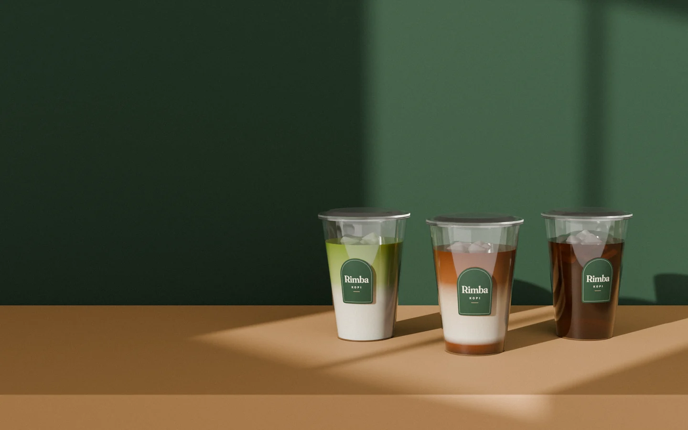
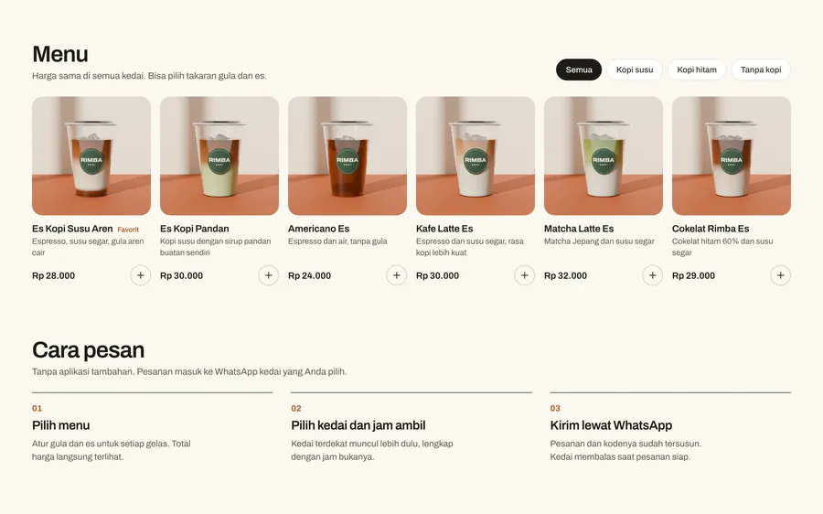
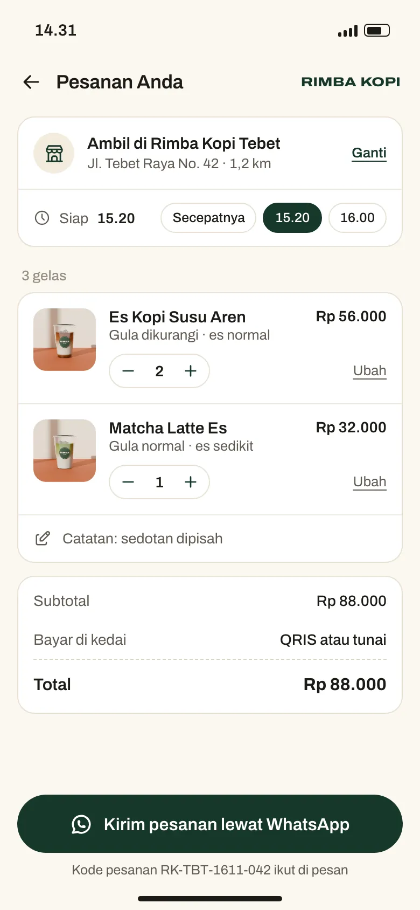
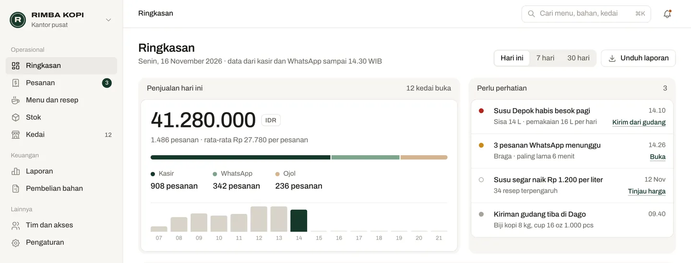
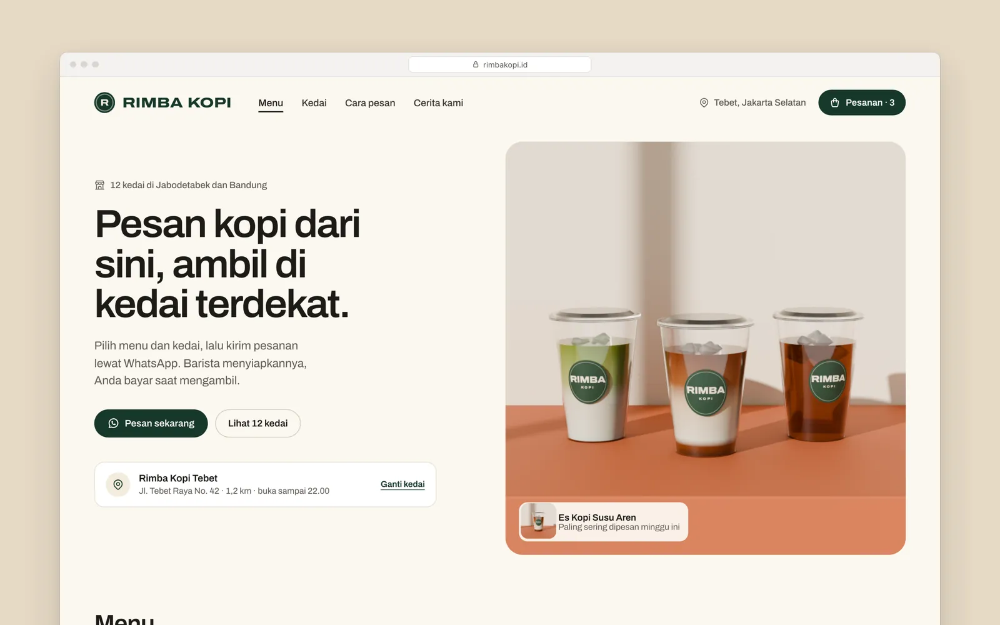
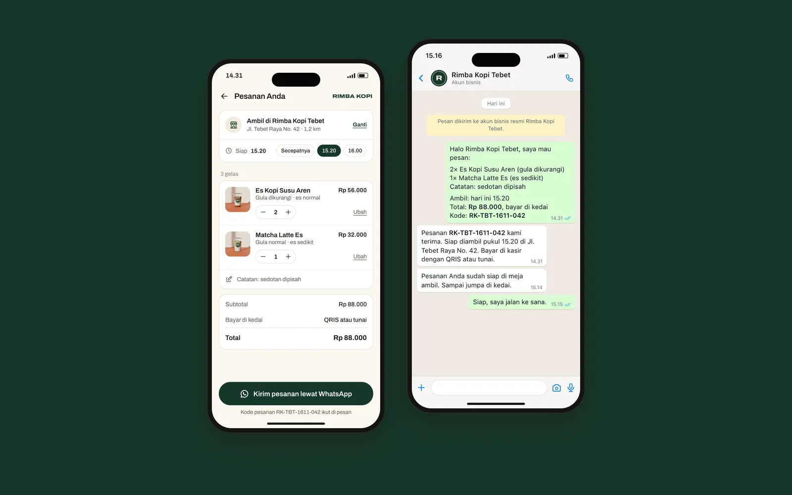
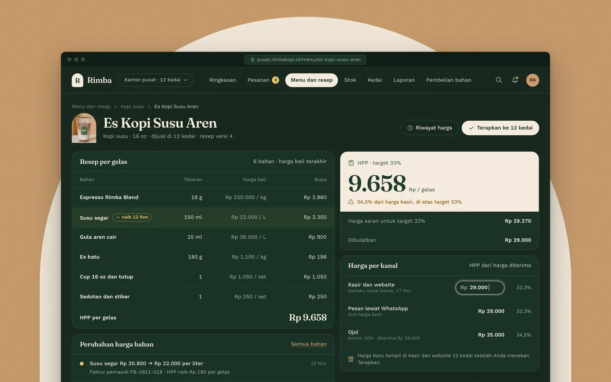
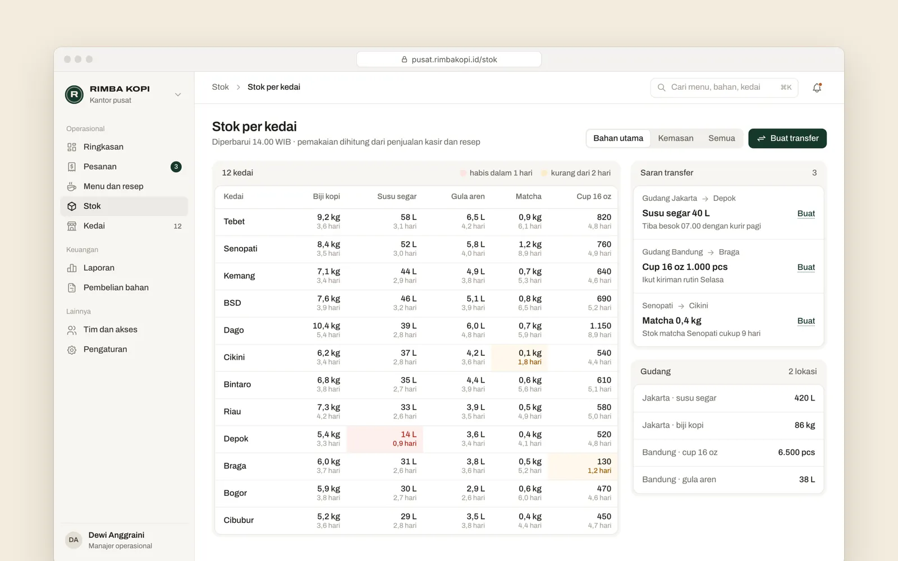
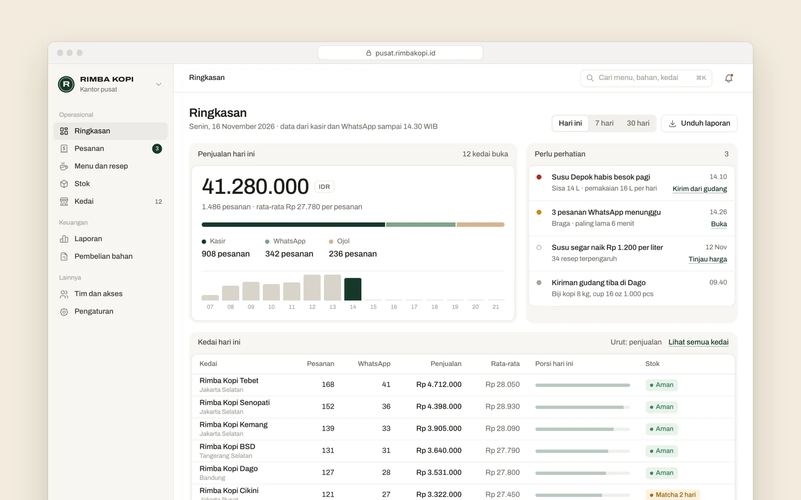

Rimba Kopi
Pengantar
Rimba Kopi adalah jaringan kedai kopi fiktif dengan 12 kedai di Jabodetabek dan Bandung. Kami memakainya untuk menunjukkan cara Providea merapikan operasional bisnis dengan banyak outlet. Website menerima pesanan dan mengirimnya ke WhatsApp kedai. Sistem menghitung harga menu dari resep. Stok setiap kedai berkurang mengikuti penjualan, dan kantor pusat melihat semuanya di satu dashboard.
Detail
- Nama proyek
- Rimba Kopi
- Klien
- Merek fiktif, jaringan kedai kopi
- Lokasi
- Jabodetabek dan Bandung
- Tahun
- 2026
- Jenis
- Website dan sistem kedai
- Tahap
- Studi konsep



Sebelumnya
Harga, stok, dan pesanan tercatat di 12 tempat.
- Harga menu di spreadsheet per kedaiSetiap kedai punya file sendiri untuk harga dan biaya resep. Saat harga susu naik, kantor pusat mengubah 12 file satu per satu.
- Stok baru diketahui setelah habisKedai menghitung stok secara manual di akhir hari. Kantor pusat tahu susu habis setelah kedai menelepon.
- Pesanan WhatsApp hilang di chatPesanan masuk ke ponsel kasir dan bercampur dengan chat lain. Kasir melewatkan pesanan yang tertimbun.
Yang Providea bangun
Lima modul yang saling terhubung.
- 01
Website dan menu online
Pelanggan melihat menu, harga, dan kedai terdekat. Harga di website mengikuti harga yang ditetapkan kantor pusat.

- 02
Checkout lewat WhatsApp
Keranjang menyusun pesanan, jam ambil, dan kode pesanan. Pesan terkirim ke WhatsApp kedai yang dipilih, dan kedai membalas saat pesanan siap.

- 03
Harga menu dari resep
Setiap menu punya resep dengan takaran dan harga beli bahan. Saat harga bahan berubah, HPP dan harga saran ikut berubah. Harga baru lalu berlaku di 12 kedai sekaligus.

- 04
Stok per kedai
Setiap penjualan memotong stok bahan sesuai resep. Tabel menunjukkan sisa hari untuk setiap bahan, dan sistem menyarankan transfer dari gudang atau kedai lain.

- 05
Dashboard pusat
Penjualan per kedai dan per kanal terlihat sepanjang hari. Hal yang perlu tindakan muncul di satu daftar: stok menipis, pesanan menunggu, dan harga bahan yang naik.

Cara kerjanya sekarang
Dari pesanan sampai laporan.
Setiap langkah mengisi data untuk langkah berikutnya. Tim kedai dan kantor pusat melihat angka yang sama.
- 01
Pesan di website
Pelanggan memilih menu dan kedai, lalu mengirim pesanan lewat WhatsApp.
- 02
Masuk ke kedai
Pesanan muncul di WhatsApp kedai dan di dashboard, lengkap dengan kode dan jam ambil.
- 03
Stok terpotong
Saat pesanan dibayar di kasir, bahan terpotong sesuai resep.
- 04
Kantor pusat memantau
Penjualan, stok, dan harga dari 12 kedai terlihat di satu dashboard.
Proyek lainnya
Lihat proyek lain.


Gratis: mockup halaman utama dan audit digital.
Siap dalam 5 hari kerja setelah meeting pertama.